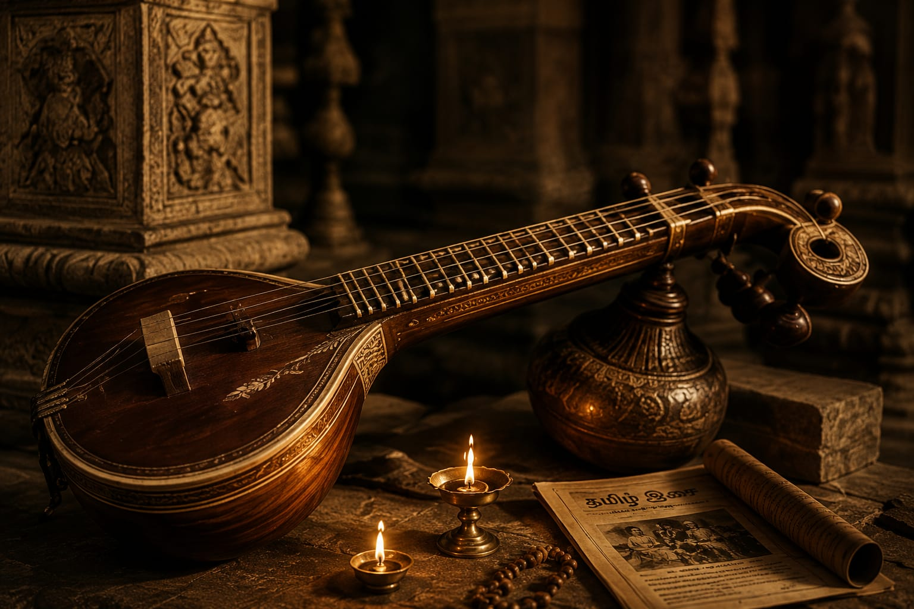

01
The Beginning
Tamil music has a rich history built through generations of traditions, melodies and rhythms.
Read StorySTORIES BEHIND THE SOUND
Discover the stories, memories and traditions behind the music that shaped generations.

01
Tamil music has a rich history built through generations of traditions, melodies and rhythms.
Read Story02
Artists and musicians continue to create new sounds while keeping the spirit of Tamil music alive.
Read Story03
Some songs become unforgettable because they become part of our memories and special moments.
Read Story